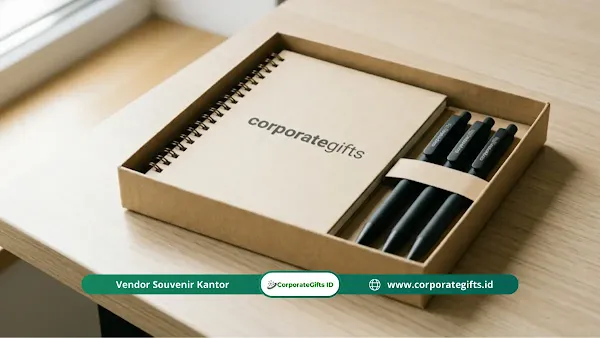

Mengapa Souvenir Onboarding Krusial bagi Karyawan Baru?
Corporate Gifts ID - Hari pertama di tempat kerja baru sering kali dipenuhi perpaduan rasa antusias dan kegelisahan. Karyawan baru melangkah ke lingkungan asing, berhadapan dengan rekan kerja yang belum dikenal, serta memikul ekspektasi tanggung jawab yang belum sepenuhnya dipahami. Dalam momen krusial ini, kehadiran sebuah welcome kit karyawan baru yang tersusun rapi di atas meja kerja bukan sekadar bingkisan fisik, melainkan pesan penerimaan hangat: “Kami telah menantikan kedatangan Anda dan siap bertumbuh bersama.”
Berdasarkan studi global dari Brandon Hall Group, institusi dengan program onboarding yang terstruktur dengan matang mengalami peningkatan retensi karyawan baru hingga 82% dan lonjakan produktivitas kerja hingga 70%. Cinderamata penerimaan karyawan berperan sebagai jembatan budaya yang mempercepat rasa memiliki (sense of belonging) dan memperkuat citra perusahaan sebagai tempat kerja impian (employer of choice).
Komponen Utama Isi Welcome Kit Karyawan Baru yang Ideal
Merancang paket onboarding yang memikat membutuhkan keseimbangan antara aspek fungsi harian, identitas brand, dan sentuhan emosional personal. Berikut enam elemen inti yang paling direkomendasikan:
- Perlengkapan Kerja Harian (Office Stationery): Buku catatan atau jurnal bersampul hard cover bermotif emboss logo perusahaan, dipadukan dengan pulpen metal rollerball yang nyaman digunakan selama minggu-minggu pertama orientasi.
- Botol Minum Branded (Tumbler Stainless Steel): Wadah minum vacuum insulated SUS 304 yang higienis dan mendukung program Green Office bebas plastik sekali pakai di lingkungan kantor.
- Tas Jinjing / Pouch Kanvas Serbaguna: Tempat penyimpanan rapi untuk kabel charger, mouse, dan perlengkapan pribadi agar meja kerja senantiasa bersih.
- Kartu Sambutan Personal Manajemen: Kartu ucapan selamat datang yang ditandatangani langsung oleh Head of Department atau CEO, menyiratkan bahwa setiap anggota baru dipandang sebagai individu berharga.
- Buku Panduan Budaya Perusahaan (Culture Handbook): Buku panduan visual berukuran ringkas yang merangkum nilai-nilai inti (core values), tradisi tim, serta etika kerja bersama.
- Artisan Treats atau Cemilan Lokal: Kopi sachet premium atau cokelat artisan lokal yang memberikan kehangatan di sela-sela sesi training hari pertama.

Komponen new employee kit: notebook custom, tumbler stainless, lanyard ID, dan kartu sambutan manajemen.
Ide Souvenir Onboarding Berdasarkan Karakter Industri
Menyesuaikan karakter hadiah dengan ritme kerja industri membuat cinderamata tersebut langsung terpakai secara produktif:
- Perusahaan Teknologi & Startup Digital: Cenderung menyukai gadget minimalis dan fungsional seperti smart card NFC, mousepad meja kulit sintetis, webcam cover pelindung privasi, serta stiker laptop bermotif kreatif.
- Industri Manufaktur, Konstruksi & Energi: Menitikberatkan pada durabilitas tinggi seperti tumbler tahan banting dengan gantungan carabiner, safety pack portabel, dan rompi atau polo shirt kerja berserat adem.
- Lembaga Keuangan, Konsultan & Korporasi Jasa: Memerlukan tampilan profesional yang rapi seperti lanyard kulit magnetik, card holder eksekutif, dan pen flash drive multifungsi.
- Organisasi Sosial & Sektor Edukasi: Mengedepankan nilai kebersamaan dan ramah lingkungan seperti totebag katun blacu organik, mug keramik bertinta kutipan inspiratif, dan jurnal berbahan kertas daur ulang.
Tabel Perbandingan 3 Skema Timing Distribusi Welcome Kit
Kapan waktu paling pas menyerahkan souvenir onboarding? Pelajari perbandingan skema pengiriman berikut untuk menentukan strategi logistik terbaik:
| Skema Timing Distribusi | Keunggulan Utama | Tantangan Logistik | Dampak Emosional Karyawan |
|---|---|---|---|
| Pre-Boarding Gift (H-3 ke Rumah) | Membangun rasa antusiasme tinggi sebelum hari pertama dimulai | Memerlukan alamat presisi dan koordinasi kurir ekspedisi ekstra | Sangat Kuat (Keluarga turut bangga & rasa cemas berkurang) |
| Day-1 Welcome Desk (Di Meja Kerja) | Praktis, rapi, dan langsung menyambut saat pertama kali duduk | Perlu penataan meja oleh tim HR/GA sebelum jam masuk kantor | Tinggi (Menciptakan momen kejutan menyenangkan yang personal) |
| Sesi Orientasi Formal (Induction Session) | Disertai penjelasan mendalam tentang filosofi setiap barang | Memerlukan ruang penyimpanan batch kit di lokasi pelatihan | Sedang-Tinggi (Memperkuat pemahaman nilai budaya perusahaan) |
Tips Memaksimalkan Souvenir Onboarding dengan Anggaran Terbatas
Perusahaan berskala menengah atau rintisan tidak perlu berkecil hati. Pengadaan welcome kit berkesan dapat diwujudkan dengan anggaran hemat berkisar Rp50.000 hingga Rp125.000 per paket melalui taktik berikut:
- Pilih 2 Item Berkualitas daripada 5 Barang Murah: Satu botol tumbler stainless SUS 304 yang awet jauh lebih dihargai dibanding gabungan gantungan kunci tipis dan pulpen plastik yang cepat macet.
- Manfaatkan Kekuatan Surat Tulisan Tangan: Menyisipkan kartu ucapan tulisan tangan dari tim kerja hampir tidak berbiaya materiil, namun memiliki dampak emosional yang tak tergantikan.
- Standardisasi Desain untuk Pembelian Massal: Pesan kemasan kotak kraft dan item utama dalam jumlah proyeksi 6 hingga 12 bulan ke depan untuk mendapatkan tiering harga grosir vendor termurah.
- Dukung Pengrajin & UMKM Lokal: Gunakan produk pouch kain blacu atau makanan ringan racikan produsen lokal yang memiliki keunikan rasa otentik dan harga kompetitif.
Kesimpulan Praktis
Menyiapkan souvenir karyawan baru yang berkesan adalah investasi cerdas dalam merajut loyalitas dan keterlibatan kerja jangka panjang. Titik tolak keberhasilannya bukan pada kemewahan harga, melainkan pada ketulusan sambutan, fungsionalitas barang, dan ketepatan waktu penyerahan.
Wujudkan paket welcome kit onboarding berstandar korporasi bersama CorporateGifts.ID. Diskusikan komposisi paket dan estimasi RAB melalui form permintaan penawaran resmi (RFQ) atau telusuri inspirasi paket New Hire pada koleksi New Employee Welcome Kit kami.
Pertanyaan Seputar Souvenir Karyawan Baru (FAQ)

Ditulis oleh: Arinda Zakia
Senior Corporate Gifting SpecialistSpesialis kurasi cinderamata perusahaan, gift set eksekutif VIP, dan pengadaan merchandise kantor dengan pengalaman lebih dari 7 tahun dalam industri corporate gifting di Indonesia.
Lihat Profil Lengkap & Panduan Lainnya